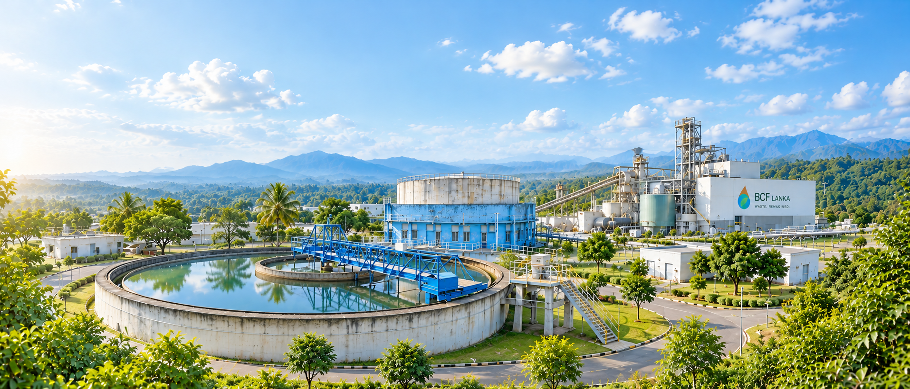

DESIGN BASIS IN THE PROPOSAL
30 tonnes / day
Proposed feedstock processing capacity.
PROJECT DEVELOPMENT
Our starting point is Sri Lanka: assessing suitable waste streams, identifying industrial demand, and developing projects around local conditions.
Explore Lindel Industrial Park
SRI LANKA / LINDEL INDUSTRIAL PARK
PROPOSED PROJECT
The September 2025 project proposal describes a planned continuous pyrolysis facility to convert suitable industrial and municipal waste into heating fuel and recovered solid material.
The proposal identifies Lindel Industrial Park and Kochchikade as planned locations. Current commissioning and operating status should be discussed directly with the BCF team.
Discuss the Sri Lanka projectDESIGN BASIS IN THE PROPOSAL
Proposed feedstock processing capacity.
PRIMARY OUTPUT FOCUS
Subject to product testing and feedstock suitability.
PROJECT APPROACH
With preparation and product recovery stages.
A DOCUMENTED MILESTONE
30 September 2025 · Conditional recommendation for the proposed Lindel project.
The Central Environmental Authority’s letter records concurrence for an environmental recommendation for the proposed BCF LANKA pyrolysis project at Lanka Industrial Estate.
The letter specifies conditions covering noise, stack emissions, and monitoring facilities. This milestone relates to the proposed project; it does not establish commissioning or operating performance.
Noise requirements form part of the conditional recommendation.
Stack emissions are subject to the conditions stated in the letter.
Monitoring facilities are included among the project conditions.
HOW WE DEVELOP A PROJECT
Each location has its own waste profile, industrial requirements, and environmental context.
Assess composition, availability, collection arrangements, and preparation needs.
Identify product requirements and potential industrial applications or offtake partners.
Evaluate equipment, site requirements, utilities, operating inputs, and project economics.
Address permissions, environmental conditions, and monitoring before implementation.
LET’S BUILD SOMETHING BETTER
Share your location, available feedstock, and partnership interest with our team.